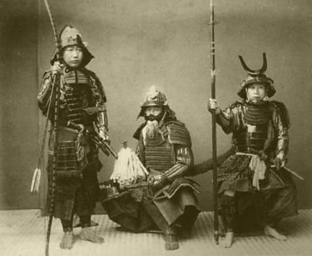
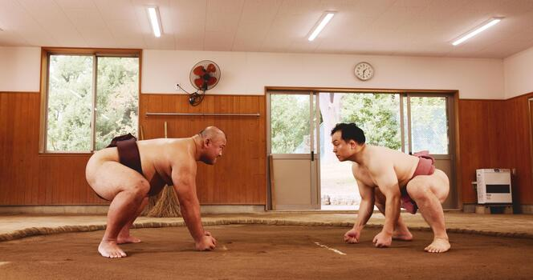

Cultura dos Samurais
Os samurais surgiram no Japão por volta do século X como guerreiros a serviço de nobres e senhores feudais. Com o tempo, tornaram-se a principal classe militar do país, seguindo um código de honra chamado Bushidō, que valorizava lealdade, coragem, disciplina e respeito. Durante séculos, os samurais participaram de guerras, protegeram territórios e exerceram grande influência na política japonesa. Sua importância diminuiu no século XIX, quando o Japão se modernizou e aboliu oficialmente a classe samurai, mas seu legado continua marcando a cultura japonesa até hoje.
 |
A fotografia é século XIX, quando o Japão começou a registrar imagens de seus samurais por meio da fotografia, preservando um registro visual dessa importante classe guerreira da história japonesa. Eles vestiam armaduras tradicionais (yoroi), formadas por placas sobrepostas que protegiam o tronco, os ombros e os braços. |
Sumô
O sumô é o esporte nacional do Japão, profundamente enraizado na religião xintoísta. Muito mais do que uma luta de contato, é um ritual sagrado de respeito e disciplina. Antes da luta, os lutadores jogam sal para purificar o ringue e batem os pés para espantar os maus espíritos. Os lutadores vivem em regime de internato e seguem regras de honra, em um ambiente onde o esporte é reverenciado . O objetivo da luta é fazer com que seu adversário toque o chão com qualquer parte do corpo, exceto a sola dos pés, ou é empurrado para fora do ringue circular.
